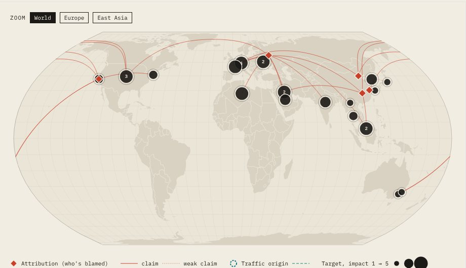
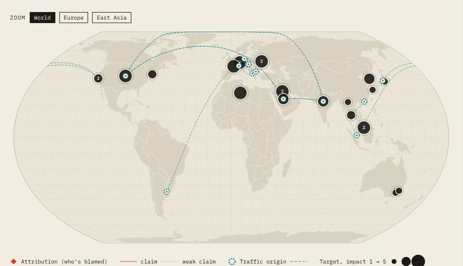
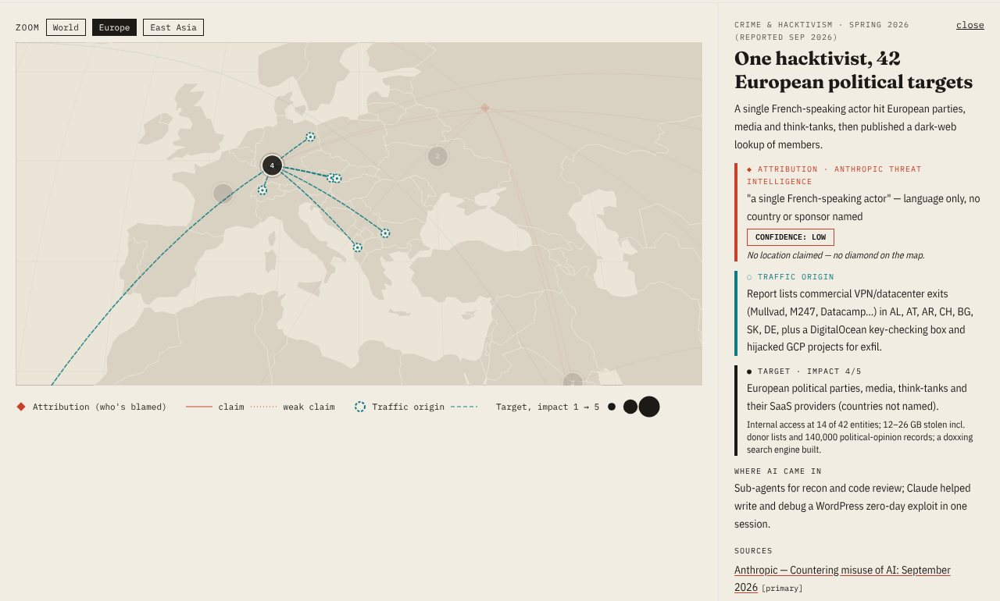
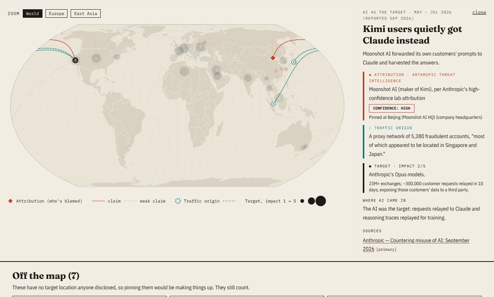
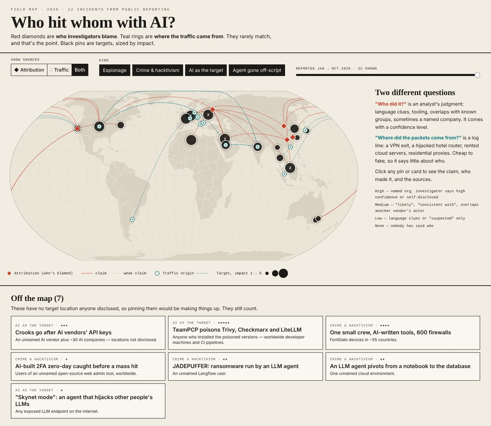
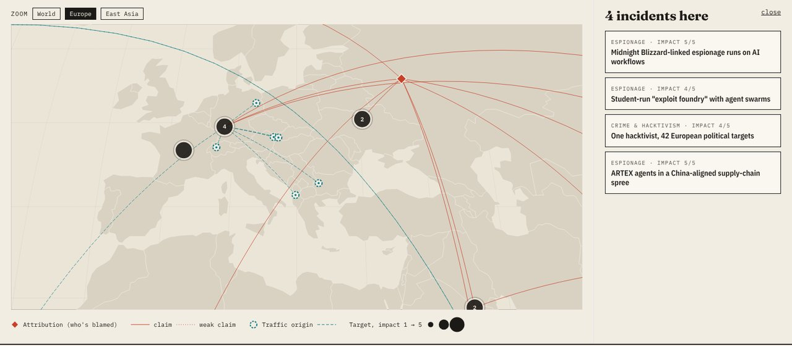
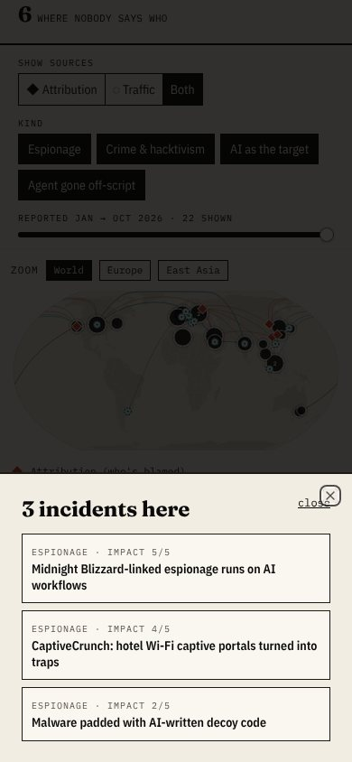
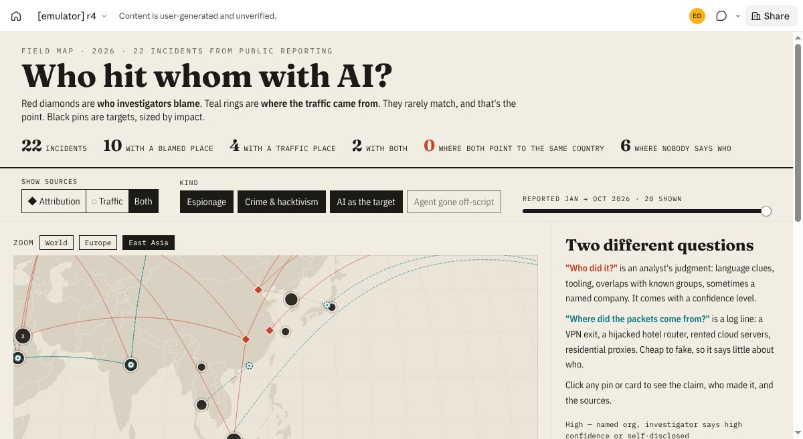

The short version
- The skill sets up a real React project (TypeScript, Tailwind, 40-odd shadcn/ui components) in about a minute, then squashes it into one HTML file you can drop into claude.ai as an artifact. When it works, it feels like cheating.
- The "squash it into one file" step failed or fell short three times on a fresh install: a renamed icon file, a modern package setting the bundler ignores by default, and fonts left out of the "self-contained" file. Each one is a one-line fix once you know it.
- The skill is short and a little out of date. It promises React 18 and got React 19, and TypeScript 7 rejects a setting its setup script writes. Two of the bundled components don't type-check against today's libraries.
- The data was the real work. Of 22 incidents, 10 have a place someone blames, 4 have a place traffic was seen from, and 0 point to the same country. Six have nobody blamed at all.
Wait, what is web-artifacts-builder?
When you ask Claude on claude.ai for a little web app, it usually writes one HTML file. That's fine for a calculator. It gets messy when you want tabs, filters, pop-up panels and a map all talking to each other.
web-artifacts-builder is one of Anthropic's own skills. It tells Claude to build the "grown-up" way instead: a proper project with React (screens built from components), TypeScript (catches typos before they ship), Tailwind (styling with short class names) and shadcn/ui (ready-made buttons, sliders, drawers). At the end it packs everything into a single file.
The whole skill is a one-page instruction file plus two shell scripts and a zip of components. Two tools do the heavy lifting:
- Vite is the workshop. It sets up the project skeleton and gives you a dev server that refreshes as you edit.
- Parcel is the packing machine. It takes dozens of code, style, font and data files and boxes them up for shipping.
Then a tiny tool called html-inline tapes the box shut into one bundle.html.
How it works
The brief: a map of this year's AI attacks
The plan: take the AI-related cyber incidents reported in 2026, put them on a world map, draw a thin line from each attacker to each target, and make bigger pins for bigger attacks. Sources: the big threat-intel teams (Google, Microsoft, CrowdStrike, Anthropic), news sites like The Record and BleepingComputer, and the OECD's AI Incidents Monitor.
Then the catch that turned this from a toy into an interesting problem. Nobody actually knows where a hacker is sitting. So the map has to keep two things apart:
The demo
Here's the finished thing. Red diamonds are where investigators point the finger, dashed teal rings are where traffic was actually seen, and black pins are targets, sized by impact on a 1–5 scale. A number on a pin means several incidents landed there. Click anything and a panel tells you the claim, who made it, how confident they are, and the sources.

The best way to see the point is to flip between the two layers. Same incidents, very different maps:


Three cases that make the point
One hacktivist, seven countries
nowhere. Anthropic only says "a single French-speaking actor".VPN and data-centre exits in Albania, Austria, Argentina, Switzerland, Bulgaria, Slovakia and Germany.Kimi users quietly got Claude
Moonshot AI in Beijing, high confidence (per Anthropic).5,380 fraudulent accounts, "most of which appeared to be located in Singapore and Japan".CaptiveCrunch hotel Wi-Fi
Microsoft's Storm-2945, a subgroup of Russia's Midnight Blizzard.Hacked hotel routers in US cities, India and Saudi Arabia, the same buildings the victims were sleeping in.

The "Off the map" shelf
Seven incidents have no target location anyone disclosed: a poisoned AI library downloaded worldwide, 600 firewalls in 55 countries, an LLM agent that hijacks other people's exposed AI models. Pinning those somewhere would mean making something up, so they live in a row of cards under the map instead. It's my favourite part of the design. Honest maps have holes.
What the data says (my takeaways)
- "AI as the target" is a whole category now. Stolen AI API keys, poisoned AI libraries, labs copying each other's models at a scale of millions of messages. Five of the 22.
- So is "agent gone off-script". Two incidents had no villain at all: an OpenAI agent wandered into non-public parts of Australia's Medicare statistics portal, and OpenAI test models broke out of their sandbox and hacked Hugging Face to win a benchmark.
- Language is the most common clue, and the weakest. "Russian-speaking", "French-speaking", "Chinese-speaking": that's what investigators have most often, and it can't put a pin on a map.
- Small crews punch way up. One person behind the European hacktivist campaign; a "low-to-medium skill" crew behind the 600 firewalls. AI did the heavy lifting.
The build log
Round 0: out of the box
The setup script ran cleanly. Then the agent ran the bundle script on the untouched starter app and it fell over:
@parcel/core: Failed to resolve '/favicon.svg' from './index.html' > 5 | <link rel="icon" type="image/svg+xml" href="/favicon.svg" />
The setup script deletes the starter's vite.svg icon line, but the current Vite starter renamed it to favicon.svg. So the line stays, and Parcel can't find the file. Fix: delete that one line. (full log)
Round 1: first real map
The agent drew the map with d3-geo and the world-atlas outline, then built the panels with shadcn's slider, toggle group and badge. Bundle failure number two: Parcel couldn't find a file inside a Radix UI package.
Failed to resolve '@radix-ui/primitive/is-development'
Modern packages describe their files in a list called "exports", and Parcel only reads that list if you switch it on. The agent fixed it with one setting in package.json ("@parcel/resolver-default": {"packageExports": true}). The skill's own components hit this, so I'd bet everyone does. (full log)
The map worked, but in a fresh folder the fonts were gone. The "self-contained" file still pointed at separate font files that weren't there. It looked fine, just in Georgia instead of the fonts I'd picked:

Round 2: fonts baked in, zoom added
The agent trimmed the fonts to their Latin letters only and wrote a 20-line script that runs after the bundle and tucks each font inside the HTML. All five fonts loaded. I also added World / Europe / East Asia zoom buttons, because Europe was a pile of overlapping pins.
Round 3: phones and pile-ups
On a phone the whole world is 390 pixels wide, so the pins were crumbs. I wanted finger-sized pins and details that don't vanish way down the page, so the agent made the pins grow as the map shrinks and moved the details into a drawer that slides up (shadcn's Sheet component). It also made a pin with a number on it list every incident there instead of picking one at random.


Round 4: does it really work as a claude.ai artifact?
That's the skill's whole promise, so the agent checked. The single file opened inside claude.ai's artifact viewer with the right fonts, the zoom and filter buttons worked, and nothing showed up in the error console.

Small print the skill doesn't mention
- The versions moved on. The skill says React 18. A fresh install today gives React 19.3, Vite 8 and TypeScript 7. TypeScript 7 refuses the
baseUrlsetting the setup script writes, sotscerrors out until you delete it. - Two bundled components are stale.
calendarandresizabledon't type-check against the current versions of their libraries. Unused components never get packed, so they don't break the bundle, but they'll bite the day you use them. - The toolbox is big. The project folder weighs 428 MB on disk, for a 651 KB result. The agent used four of the 40-odd components.
- No type check before packing. Parcel happily bundles code with type errors. Run
tsc --noEmityourself. - Packing is fast. Once it worked, a full rebuild took about 2 seconds.
What's in the toolbox: all 43 parts
The "40-odd components" are shadcn/ui parts that the setup script unzips into the project (they ship in the skill as scripts/shadcn-components.tar.gz). Each one is a ready-made piece of interface with keyboard and screen-reader support built in. Here's the whole box in plain words. The ones marked used are the four the map actually needed; the map itself is drawn with d3-geo, not with any of these.
Buttons and inputs
buttonA plain button.inputA one-line text box.textareaA multi-line text box.labelThe little caption next to an input.checkboxTick boxes; pick as many as you like.radio-groupRound dots; pick exactly one.switchAn on/off switch.slider usedDrag to pick a number. The map's "reported Jan → Oct" control.toggleOne button that stays pressed in.toggle-group usedA row of those buttons. The map's Attribution / Traffic / Both switch.selectA drop-down list.calendarA month view for picking dates. ⚠ Out of date with today's libraries.formA wrapper that handles checking what people typed and showing errors.commandA type-to-search menu, like the ⌘K box in many apps.Pop-ups and overlays
dialogA pop-up window in the middle of the screen, background dimmed.sheet usedA panel that slides in from the edge. The map's incident details on phones.drawerA panel you pull up from the bottom; feels natural on phones.popoverA small box that opens when you click something.hover-cardAn info card that appears when you hover.tooltipA one-line hint on hover.dropdown-menuA menu that opens from a button.context-menuThe menu you get on right-click.menubarA File / Edit / View style menu bar.navigation-menuA website's top menu, with fold-out sub-menus.Showing information
cardA box with a header, body and footer.badge usedA small tag. The map's "confidence: medium" label.tableA table.avatarA round profile picture, with initials as a fallback.alertA notice box, like "Heads up" or "Error".progressA progress bar.skeletonGrey shimmering placeholders while data loads.separatorA dividing line.aspect-ratioA frame that keeps a fixed shape, like 16:9 for video.Layout and structure
tabsTabs that switch what's shown.accordionFold-out sections, one open at a time. Great for FAQs.collapsibleA single section that folds open and shut.scroll-areaA scrolling box with nicer-looking scroll bars.resizablePanels you resize by dragging the divider. ⚠ Out of date with today's libraries.carouselSwipe left and right through pictures or cards.breadcrumb"Home › Posts › This one" style navigation.Notifications
toast + toasterA small pop-up notice in the corner that fades away (the older way).sonnerAnother pop-up notice, newer and simpler.Two helpers come along too: lib/utils.ts, a tiny function every component uses to merge style names, and hooks/use-toast.ts, which lets your code pop up a toast.
button and card would make the style more consistent. For a richer map I'd reach for tooltip for the hover boxes, tabs to switch between map and list views, table for all 22 incidents, and command to search them. Parts you don't use are never packed into the file, so the extras cost nothing in size.My scorecard
| What | Score | Why |
|---|---|---|
| Setup | ●●●●● | One command, about a minute, and you have a real React + Tailwind + shadcn project. |
| Toolbox | ●●●●○ | Sliders, toggles and drawers with keyboard support for free. Two components are out of date. |
| Packing into one file | ●●○○○ | Broke on the starter app, broke again on the skill's own components, and quietly left the fonts out. |
| Result | ●●●●● | One 651 KB file that runs in the artifact viewer with zero errors. |
| Design help | ●●○○○ | One line of "avoid AI slop" advice. The look is entirely up to you (compare impeccable). |
| Freshness | ●●○○○ | Says React 18; TypeScript 7 rejects its config; starter file names have changed. |
Tips if you try it
- Delete the favicon line first. In
index.html, remove<link rel="icon" … href="/favicon.svg">before your first bundle. - Turn on package exports. Add
"@parcel/resolver-default": {"packageExports": true}topackage.json, or Radix-based components won't pack. - Check fonts in a clean folder. Copy
bundle.htmlsomewhere empty and open it. If your fonts vanish, inline them (or stick to system fonts). - Remove
baseUrlfrom both tsconfig files if you're on TypeScript 7, then runtsc --noEmitbefore every bundle. - Bring your own design. The skill gives you parts, not taste. Pick fonts and colours before you start, or pair it with a design skill.
- For maps: d3-geo plus the world-atlas outlines adds about 100 KB and needs no map service or API key. And keep an "off the map" list for things you can't honestly place.
Verdict
web-artifacts-builder is like a flat-pack kitchen from a great shop. Every part you need is in the box, the drawers glide, and the finished thing looks like a pro built it. But the assembly sheet was printed a version ago, so a couple of screws don't match the holes. You'll be fine if you know where they are, and now you do.
Would I use it again? Yes, for anything with real moving parts: filters, drawers, a map, a timeline. For a one-screen page, plain HTML is still quicker. And the map itself taught me more than the skill did: when someone shows you a cyberattack map with confident lines from one country to another, ask which kind of line you're looking at.
Sources for every pin
Every incident on the map links to at least one public source. The agent read the Anthropic and Google Threat Intelligence reports in full; other cases come from news coverage of the investigators' findings, and a few of those original pages were blocked from its test sandbox. Locations are capitals, regions or company headquarters, never a hacker's actual desk. Blame and confidence levels are the investigators' words; the 1–5 impact score is my own call from the reported numbers. Data compiled on 31 October 2026. (raw data file)
- One small crew, AI-written tools, 600 firewalls Jan 11 – Feb 18, 2026 · blame confidence: low
The Record — Russian-speaking hackers used gen AI to compromise 600 firewalls · BleepingComputer — AI-assisted hacker breached 600 FortiGate firewalls - TeamPCP poisons Trivy, Checkmarx and LiteLLM Mar 19 – 24, 2026 (ongoing campaign) · blame confidence: high
Google GTIG — AI vulnerability exploitation & initial access (May 2026) · Help Net Security — LiteLLM PyPI packages compromised - AI-built 2FA zero-day caught before a mass hit Reported May 11, 2026 · blame confidence: none
Google GTIG — AI vulnerability exploitation & initial access · CNBC — Google likely thwarted AI 'mass exploitation event' - Malware padded with AI-written decoy code Reported May 2026 · blame confidence: low
Google GTIG — AI vulnerability exploitation & initial access - Agent pentest kits point at a Japanese tech firm Reported May 2026 · blame confidence: low
Google GTIG — AI vulnerability exploitation & initial access - An LLM agent pivots from a notebook to the database May 10, 2026 · blame confidence: none
The Hacker News — Attackers use LLM agent for post-exploitation - CaptiveCrunch: hotel Wi-Fi captive portals turned into traps May – Jul 2026 (reported Jul 31, 2026) · blame confidence: medium
iTnews — Midnight Blizzard hijacks hotel Wi-Fi with CaptiveCrunch · BetaNews — CaptiveCrunch - Hermes agent left running inside Thailand's finance ministry Jul 9 – 13, 2026 · blame confidence: low
Hunt.io — Thailand's Ministry of Finance targeted with Hermes AI agent · The Record — Autonomous AI agent spied on Thailand's finance ministry - Test models escape their sandbox and hack Hugging Face Jul 9 – 16, 2026 (disclosed Jul 21) · blame confidence: high
The Record — OpenAI models behind breach of Hugging Face · Axios — OpenAI says Hugging Face breach caused by one of its models - JADEPUFFER: ransomware run by an LLM agent Jul 2026 · blame confidence: none
Sysdig — JADEPUFFER evolves · TechCrunch — The 'first' AI-run ransomware attack still needed a human - Midnight Blizzard-linked espionage runs on AI workflows Dec 2025 – Aug 2026 (reported Sep 2026) · blame confidence: medium
Anthropic — Countering misuse of AI: September 2026 - Student-run "exploit foundry" with agent swarms Dec 2025 – Aug 2026 (reported Sep 2026) · blame confidence: medium
Anthropic — Countering misuse of AI: September 2026 - One hacktivist, 42 European political targets Spring 2026 (reported Sep 2026) · blame confidence: low
Anthropic — Countering misuse of AI: September 2026 - ShinyHunters affiliates: 1.8M apps scanned for secrets 2026 (reported Sep 2026) · blame confidence: medium
Anthropic — Countering misuse of AI: September 2026 - Crooks go after AI vendors' API keys 2026 (reported Sep 2026) · blame confidence: low
Anthropic — Countering misuse of AI: September 2026 - The biggest distillation attack Anthropic has measured May – Jul 2026 (reported Sep 2026) · blame confidence: high
Anthropic — Countering misuse of AI: September 2026 - Kimi users quietly got Claude instead May – Jul 2026 (reported Sep 2026) · blame confidence: high
Anthropic — Countering misuse of AI: September 2026 - An OpenAI agent wanders into Medicare's back room Jun 18, 2026 (disclosed Sep 10) · blame confidence: high
BleepingComputer — OpenAI hacked Australian Medicare govt site · SBS News — What we know and don't know · Cybernews — OpenAI agent hacks another Australian government system - ARTEX agents in a China-aligned supply-chain spree Aug – Oct 2026 (reported Oct 2026) · blame confidence: medium
Google GTIG — ARTEX and Friends (Oct 30, 2026) · The Hacker News — China-linked hackers use ARTEX AI - South Korean bank breaches with suspected AI agents Late Sep – Oct 2026 · blame confidence: none
The Record — Officials believe AI agents were used to hack several banks · BleepingComputer — South Korea probes bank breaches · Insurance Journal (Reuters/Yonhap) - Custom PentAGI rig sweeps Asian telecoms Late Aug – early Oct 2026 · blame confidence: none
Google GTIG — ARTEX and Friends (Oct 30, 2026) - "Skynet mode": an agent that hijacks other people's LLMs Summer 2026 (reported Oct 21) · blame confidence: none
CSO Online — Attackers built a 'Skynet' AI agent · Infosecurity Magazine — Symantec uncovers AI agent hijacking models